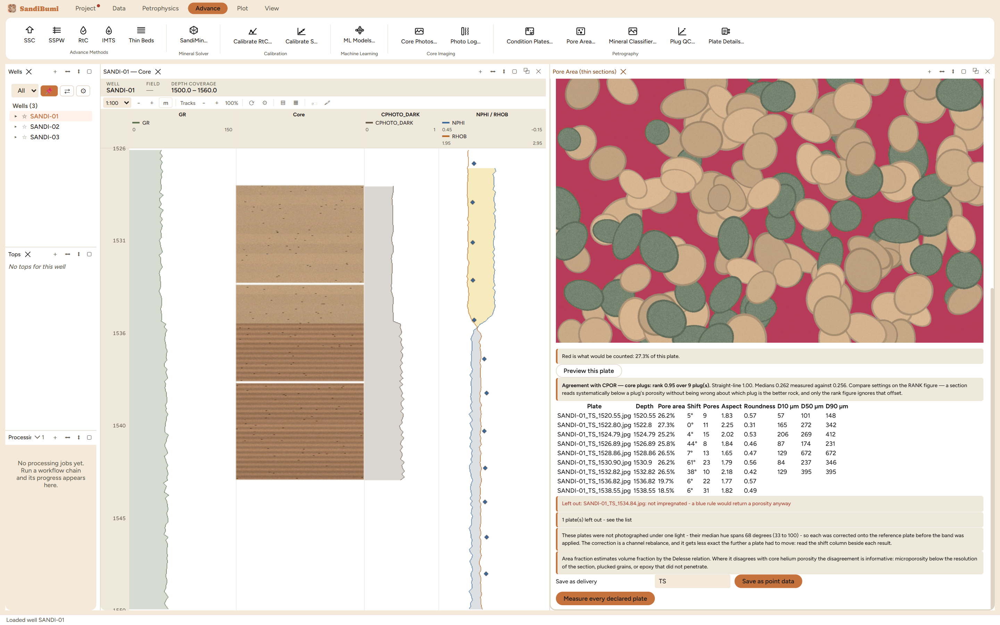

Pore Area measures the blue-epoxy area on each thin section, which
estimates pore volume by the Delesse relation, and can measure each
pore's shape and size beside it. It is deliberately the dimensionless
measurement first: an area fraction needs no scale, so it runs on every
declared plate, while diameters in micrometres are written only where the
plate carries one. Reach for it once a delivery is declared in Plate
Details, and always with an independent check in hand.
The pane

The example delivery measured: the mask overlay reads
"Red is what would be counted: 27.3% of this plate", nine plates land
between 18.5% and 27.3%, the unimpregnated plate is left out by name,
and the agreement with core porosity reads rank 0.95 over 9
plugs.
The preview is the measurement. The overlay comes back from
the same code that measures, so what you tune the colour band
against is literally what gets counted; Pick the pore colour
re-centres the band on a clicked patch of epoxy.
A reference plate normalizes the delivery. Every other plate
is colour-corrected onto the plate the band was tuned on, anchored on
the rock's matrix colour – never grey, which would scrub out
the very blue being measured – and the Shift column reports how
far each plate's light sat from the reference's.
Check against scores the run against an independent
measurement of the same plugs before anything is saved.
Step by step
Open Advance ▸ Petrography ▸ Pore
Area…, pick the tuning plate, and Preview this
plate until the red mask claims epoxy and only epoxy.
Name that plate as the Reference plate, choose Check
against core porosity, tick the opt-in geometry if wanted, and
Measure every declared plate.
Read the agreement, the table and the refusals; only then save,
as a named delivery of point data.
Reading the result
On the example the nine measured fractions track the plugs almost
perfectly – the agreement banner reads:
Agreement with CPOR — core plugs: rank 0.95 over 9 plug(s). Straight-line 1.00. Medians
0.262 measured against 0.256. Compare settings on the RANK figure — a section reads
systematically below a plug's porosity without being wrong about which plug is the
better rock, and only the rank figure ignores that offset.
Treat that as what a clean, single-lamp delivery can do, not as what
to expect: the example plates are as kind as thin sections get, and a
real delivery photographed across sessions lands far lower, which is
exactly what the Shift column and the one-light note exist to expose.
Here the two green-cast plates carry the largest shifts (61° and
38°) and still measure with their neighbours after correction, the
delivery's hue span of 68° is reported, and the two undeclared-scale
plates get their fraction, count, aspect and roundness but empty
diameter columns. One plate is refused outright:
Left out: SANDI-01_TS_1534.84.jpg: not impregnated - a blue rule would return a porosity
anyway
Saving wrote the run as a PETROGRAPHY point-data delivery: VPORE_TS,
PORE_N, PORE_ASPECT and PORE_SHAPE on nine plates, PORE_D10/D50/D90 on
the seven with a scale – a diameter is never written as NaN on an
uncalibrated plate, because that would read as a measurement that failed
rather than one that was never possible.
QC and pitfalls
Tune against the preview, judge against the rank. A colour
band can be tuned until the median matches a point count while the
per-plate agreement stays at zero; the average is the one statistic
that survives a segmentation that has stopped discriminating.
Where it disagrees with helium porosity, the disagreement is
informative: microporosity below the section's resolution,
plucked grains, or epoxy that did not penetrate. A section reading
below its plug is normal; a section reading above it is a band
claiming minerals.
Measuring and saving are separate. Tuning means running many
times; only the save with a set name writes anything, and re-running
a measurement never looks like a second delivery of pictures.